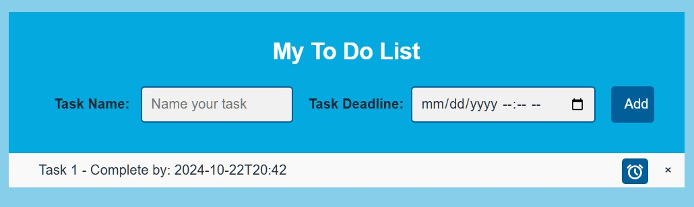
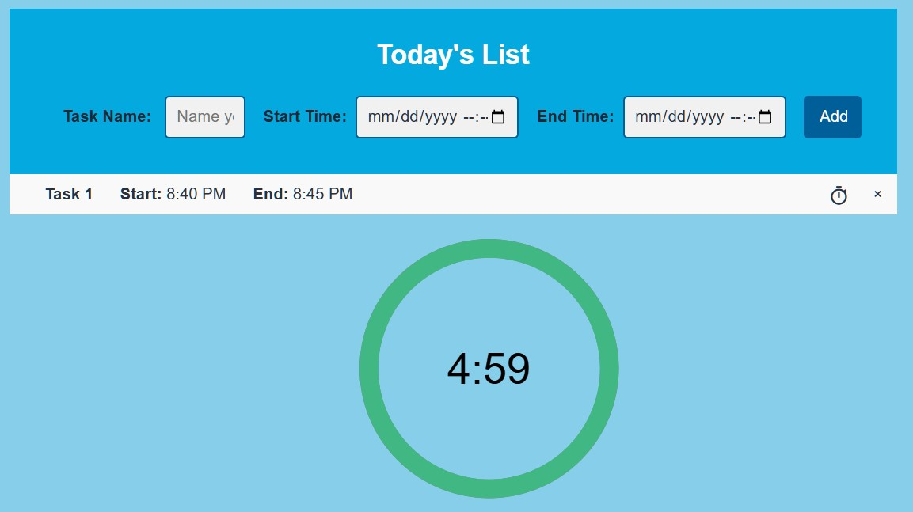
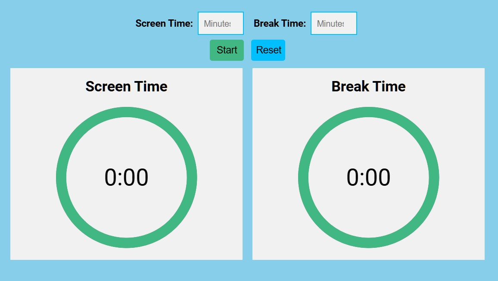

Let’s say you have to create a 20-slide presentation and practice presenting
within a month. Your plan? Work 20 minutes a day. While this may seem like a
valid goal and plan, this is actually an unpredictable plan that could very
well end in failure. For example, what if you’re caught up in other projects
and events, and can’t create room in your schedule? An important part that
this plan is missing is a progress tracker. In a long-term plan with many
unpredictable variables, like the ones given in our example, one needs to
implement time management tools.
To improve this plan, a useful strategy is
to divide your presentation into multiple parts: rough draft, writing,
editing, and practicing presenting. These could be short-term goals (tasks
you want to complete in a shorter period of time). For instance, by the end
of day three, you should finish a rough draft, by the end of week 2, you
should have written it, etc. This is where Timer Master comes in. With our
wide-ranging features, including timer, countdown, stopwatch, time planner,
to do, and screen time, these tools can greatly improve your time management
to ensure the successful completion of tasks.
With our various timers, like timer, countdown, and stopwatch, you can take time management to a whole new level. For example, with countdown, you will never miss an important deadline. Meanwhile, you can use stopwatch to keep track of how long each activity takes, to better help you manage your time. Finally, with timer, it can help you stay on track and know how long to do something for. Time Planner Time Planner is a great tool to help schedule your day. Time Planner allows you to enter tasks you wish to accomplish in a day and enter start and end times. When it is time to start a task, click the timer icon, and a timer will be set for you. This helps you to keep track of how long to do an activity. When you’re done with a task, click on it to strike it out. If you change your mind and reschedule your day, you can easily delete a task by clicking on the “x” icon.

Similar to Time Planner, To Do is great for long-term planning. Enter tasks
and the task deadline and click the add button. Your tasks will be displayed
in the list below. By clicking on the alarm icon, a countdown will be set
for the task deadline and will ring at the deadline to remind you.

Time Planner is a great tool to help schedule your day. Time Planner allows you to enter tasks you wish to
accomplish in a day and enter start and end times. When it is time to start a task, click the timer icon, and a
timer will be set for you. This helps you to keep track of how long to do an activity. When you’re done with a task,
click on it to strike it out. If you change your mind and reschedule your day, you can easily delete a task by
clicking on the “x” icon.

If you feel like you’ve been struggling to manage your screen time, Screen
Time can help. By entering your screen time and break time in minutes, a
timer will start for screen time. When time is up, you’ll receive an alarm
reminder, and the break time will start.
Importantly, screen time can also
be used for multiple purposes. It can also serve as a Pomodoro timer, which
is when you do work in intervals, and take breaks after each interval.
While just a simple question-and-answer form, Daily Reflection is a powerful tool. Reflecting on how you managed your time that day, can help you better understand how to adjust your schedule for further efficient time management the next day.
Given all of Timer Master’s helpful features to ensure efficient time management, why don’t you go try them out now?